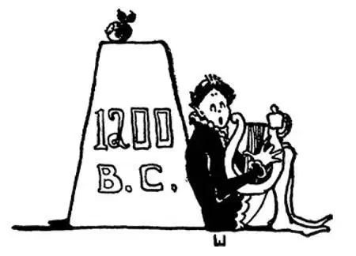

11
A Fairy-Tale War
神话故事中的战争

THE history of countries usually begins—and also ends—with war. The first great happening in the history of Greece was a war. It was called the Trojan War and was supposed to have taken place about twelve hundred years before Christ, or not long after the beginning of the Iron Age. But we are not only unsure of the date; we are not even sure that there ever was such a war, for a great deal of it, we know is simply fairy tale. This is the way the tale goes.
Once there was a wedding feast of the gods and goddesses on Mount Olympus, when suddenly a goddess who had not been invited threw a golden apple on the table. On the apple were written these words:
TO THE FAIREST
.
The goddess who had thrown the apple was the goddess of quarreling; and true to her name she did start a quarrel, for each of the goddesses, like vain human beings, thought she was the fairest and should have the apple. At last they called in a shepherd boy named Paris to decide who was the fairest.
Each goddess offered Paris a present if he would choose her. Hera, the queen of the gods, offered to make him a king; Athena, the goddess of wisdom, offered to make him wise; but Aphrodite, the goddess of beauty, offered to give him the most beautiful girl in the world for his wife.
Now, Paris was not really a shepherd boy but the son of Priam, the king of Troy, which was a city on the seashore opposite Greece. When he was a baby, Paris had been left on a mountain to die, but he had been found by a shepherd and was brought up by him as his own child.
Paris didn't care about being wise; he didn't care about being king; what he did want was to have the most beautiful woman in the world for his wife, and so he gave the apple to Aphrodite.
Now the most beautiful woman in the world was named Helen, and she was already married to Menelaus, the king of Sparta. In spite of that fact, Aphrodite told Paris to go to Sparta in Greece, where he would find Helen, and then run away with her. So Paris went to Sparta to visit King Menelaus and was royally entertained by him. And then Paris, although he had been treated so kindly and had been trusted, one night stole Helen away and carried her off across the sea to Troy.
Menelaus and the Greeks were naturally very angry and immediately prepared for war and sailed off for Troy to get Helen back. Now, in ancient times all cities had walls built around them to protect them from the enemy. As there were no cannons nor guns nor deadly weapons such as are used in war nowadays, it was very hard to get into a walled city or capture it. Troy was protected in this way by walls; and though the Greeks tried for ten years to capture it, at the end of the ten years Troy was still unconquered.
At last the Greeks decided to try a trick to get into the city. They built a huge horse of wood, and inside this wooden horse they put soldiers. They placed the horse in front of the city walls and then sailed away as if at last they were giving up the war. The Trojans were told by a spy that the horse was a gift of the gods and that they ought to take it into the city. A Trojan priest named Laocoon, however, told his people not to have anything to do with the horse, for he suspected a trick. But people seldom take advice when told not to do what they want to do.
Just then some huge snakes came out of the sea and attacked Laocoon and his two sons and, twining around them, strangled them to death. The Trojans thought this was a sign from the gods, or an omen as they would have said, that they should not believe Laocoon; so they determined to take the horse into the city against his advice. The horse was so big, however, that it would not go through the gates, and in order to get it inside the walls they had to tear down part of the wall itself. When night fell, the Greek soldiers came out of the horse and opened the gates of the city. The other Greeks, who had been waiting just out of sight, returned and entered through the gates and the hole the Trojans had made in the wall. Troy was easily conquered then, and the city was burned to the ground, and Helen's husband carried her back to Greece. Because of this horse trick, we still have a saying, “Beware of the Greeks bearing gifts,” which is as much as to say, “Look out for an enemy who makes you a present.”
The story of the Trojan War was told in two long poems. Some people think they are the finest poems that were ever written. One of these poems is called the Iliad , from the name of the city of Troy, which was also known as Ilium. The Iliad describes the Trojan War itself. The other poem is called the Odyssey and describes the adventures of one of the Greek heroes on his way home after the war was over. The Greek hero's name was Odysseus, which gives the name Odyssey to the book, but he was also called Ulysses. These poems, the Iliad and the Odyssey , were composed by a Greek poet named Homer, who is supposed to have lived at some time before 700 B.C.
Homer may have been a bard; that is, a singing poet who went about from place to place and sang his songs to the people. He probably collected old legends and made his poems from them. Usually a bard played on a lyre as he sang, and the people gave him something to eat or a place to sleep to pay him for his songs.
People enjoyed hearing Homer's songs. They learned them by heart, and mothers taught them to their children after Homer had died. The poems are written down in Greek, and you may some day read them in Greek, if you study that language, or at least in an English translation.
I have told you that Homer probably made his songs out of old legends. There were many legends, too, about Homer himself, and we don't know which are true. He was said to have been blind. Seven different cities each proudly claimed that Homer had been born in their city, so you can count six or seven legends right there!
【中文阅读】
国家的历史通常以战争开始，也以战争结束。发生在希腊历史上的第一件大事就是一场战争。这场战争叫做特洛伊战争，据推测这场战争发生在公元前1200年左右，铁器时代开始后不久。可是，我们不仅无法确知战争的时间，连是否真的发生过这场战争也不能确定，因为，这场战争的很多事情，我们只是从神话故事里知道的。这个故事是这样的：
有一次，奥林匹斯山上正在举行婚筵，众神都在座，忽然一位没有被邀请的女神，把一只金苹果扔在桌上。金苹果上写着这样几个字：
给天下最美的女神
扔下这只苹果的是纷争女神；恰如其名，她真的引起了一场纷争，因为每一位女神都和人类一样有虚荣心，认为自己是天下最美的，应该得到那只苹果。最后，她们叫来一个叫帕里斯的牧童，让他判定谁是最美的。
每一个女神都向帕里斯许诺，如果他挑中自己，就会给他一件礼物。天后赫拉，众神之母，许诺让他成为一个国王；雅典娜，智慧女神，许诺让他成为智者；而阿芙洛狄忒，美丽女神，许诺让世界上最美的女人做他的妻子。
帕里斯事实上并不是个牧童，而是特洛伊城国王普里阿摩斯的儿子，特洛伊就在希腊对面的海岸上。帕里斯还是婴儿的时候就被丢弃在一座山上，不管其死活，但是被一个牧羊人发现了，牧羊人把他带回家，就当做自己的孩子抚养长大。
帕里斯对成为智者不感兴趣；他也不想做国王；他一心想要的就是个世界上最美的女人做他的妻子，于是他就把苹果给了阿芙洛狄忒。
当时，世界上最美的女人名叫海伦，她已经嫁给了斯巴达国王梅内莱厄斯。尽管如此，阿芙洛狄忒还是吩咐帕里斯去希腊的斯巴达，在那里他可以找到海伦，然后带着她私奔。于是，帕里斯就去斯巴达拜见了国王梅内莱厄斯，国王以皇家规格热情招待了他。虽然帕里斯受到如此盛情的款待，还获得了国王的信任，可是一天夜里，他还是偷偷带走了海伦，和她一起坐船回到了特洛伊。
梅内莱厄斯和所有希腊人当然无比愤怒，立即准备好战争，坐船向特洛伊进军去夺回海伦。古代，所有的城市都有城墙围绕，以防御外敌。那时没有枪炮，也没有现代战争中常用的各种致命武器，所以，攻陷或占领一座有城墙的城市是很难的。特洛伊城就有坚不可摧的城墙保护自己，希腊人打了十年的仗想要攻占它，但是十年过去了，特洛伊仍然没有失守。
最后，希腊人决定耍个诡计进入该城。他们造了一个巨大的木马，在木马里面藏了很多士兵。他们将木马丢弃在特洛伊城墙外，然后乘船离开，好像他们最终放弃了这场战争。希腊人安排的奸细告诉特洛伊人木马是神的礼物，他们应该把它弄进城里。但是，特洛伊的一个祭司，名叫拉奥孔，告诫大家千万不要动这个木马，因为他怀疑这是个奸计。但是，特洛伊人很想做什么事的时候，很少能听进别人的劝阻。
就在那时，几条巨蟒从海里冒出来，冲向拉奥孔和他两个儿子，一下缠住他们的身子，把他们活活勒死了。特洛伊人认为这是神的警示，或者用他们的话说这是个预兆，告诫他们不要相信拉奥孔的话；于是，他们决定不听拉奥孔的规劝把木马弄进城。但是，木马太大了，从城门根本进不去。为了把它弄进城，他们不得不拆掉一部分城墙。夜色降临了，希腊士兵钻出木马，打开了城门。一直等候在外、隐藏着的希腊士兵立即返回，穿过城门和特洛伊人拆除的城墙上的洞进入城内。特洛伊被一举征服了，整座城也被焚为平地，海伦被丈夫接回了希腊。因为这个木马诡计，我们现在还有句谚语“提防带着礼物的希腊人”，意思相当于“要警惕送礼的敌人”。
特洛伊战争的故事被写成两首很长的叙事诗。有人认为这两首诗是迄今为止最优美的诗篇。其中一首诗叫做《伊利亚特》，诗名取自特洛伊城的另一个名字——伊利昂。《伊利亚特》描述的就是特洛伊战争。另一首诗叫《奥德赛》，描述的是一位希腊英雄在战争结束后回家途中的冒险经历。这个希腊英雄名叫奥德修斯，诗的标题就是取自他的名字，但他还有个名字叫尤利西斯。这两部史诗《伊利亚特》和《奥德赛》，是由一位名叫荷马的希腊诗人创作的，据推测他生活在公元前700年以前的某个时期。
荷马可能是个吟游诗人。所谓吟游诗人就是到处流浪吟唱诗歌的诗人。他可能收集了一些古老的传说，并据此创作了这两部史诗。吟游诗人通常在唱歌时用一种叫里拉的弦乐器伴奏，听的人会向他提供暂时的食宿作为回报。
人们喜欢听荷马唱的诗歌，逐渐记住了他唱的内容，荷马死后，就由妈妈们把 这些诗歌传给了下一代。这些诗是用希腊语记载成书的，如果你学希腊语，就有机会读到它们，或者最起码可以看看英译本。
我刚才说了，荷马很可能是根据古老传说创作了自己的诗歌。而关于荷马本人也有很多传说，我们分不清哪些是真的。据说他是个盲人。有七个城市都各自骄傲地宣称荷马诞生在他们那儿，你算算吧，那就会有六七种不同的传说了！

公元前1200年